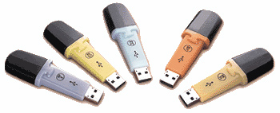
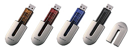
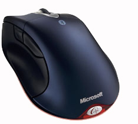
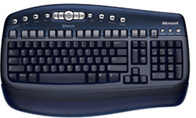

| Technook
Hardware
Storage Devices
DiskOnKey
- like a keychain
DiskOnKey
operates as a secure, reliable, removable disk, using a standard
Universal Serial Bus (USB) device interface. Your host computer
immediately detects it, recognizing it as a supplementary
removable disk and assigning it a drive letter. DiskOnKey
supports complete and instantaneous plug and play interoperability
on the latest Windows®, Mac®, OS and Linux® operating
systems, with no software drivers required*. Since DiskOnKey
has its own central processing unit (CPU), it can directly
support and run multiple applications, crossing the boundaries
between a PC and a Macintosh.
Smart, removable data storage for business and personal use
Highly reliable data retention using M-Systems patented technologies
Available in 8, 16, 32, 64, 128, 256 and 512MB capacities
Multiple certifications, including USB 2.0 Full Speed and
WHQL for Windows
Automatic system detection as a removable disk Fully plug
and play operation with no driver required No separate power
supply or battery required KeySafe data security application
support.
Reference:
http://www.diskonkey.com/prod_dok.asp
SONY
MICROVAULT
STORE
UP TO 128 MB IN YOUR POCKET
It
allows storing up to 128MB of large-volume data into the small-sized
device that can be put in your pocket. Secure your data from
theft with Security Zone Software requiring password confirmation
to access data.
You can select from 16MB/32MB/64MB/128MB according to your
needs; different colouring of each model helps you identify
the capacity sizes.
PLUG
AND PLAY USB PORT
It's
easy -- the device can be recognized automatically* when you
connect it to a USB port, which is equipped with most PCs.
Power will be supplied through adapter, reader/writer and
USB port, so you don't need AC adapter. * For Windows XP,
Windows 2000, Windows Me and Mac OS 9.0 and higher.
For Windows 98/98 SE, you need to install a device driver
from the supplied CD-ROM or from the website.
Reference
: http://www.ow.com.au/products/sony_Microvault.htm
Bluetooth
Wireless Technology
Bluetooth™
wireless technology is an industry-standard protocol that
provides short-range wireless connections between Bluetooth
devices, such as keyboards, mouse products, cellular phones,
printers, and computers. 
Because Bluetooth wireless technology uses radio transmission,
data is transmitted quickly. Bluetooth wireless technology
helps ensure that interference is minimal and that data transmission
is secure.

Get
the most advanced features in a total desktop solution. The
included Microsoft Wireless Transceiver for Bluetooth™
works with your keyboard and mouse, providing a wireless range
of up to 30 feet. And because Bluetooth sets the bar for the
emerging wireless world, you can add other compatible Bluetooth
devices.
Reference:
http://www.microsoft.com/hardware/mouse/bluetooth.asp
|